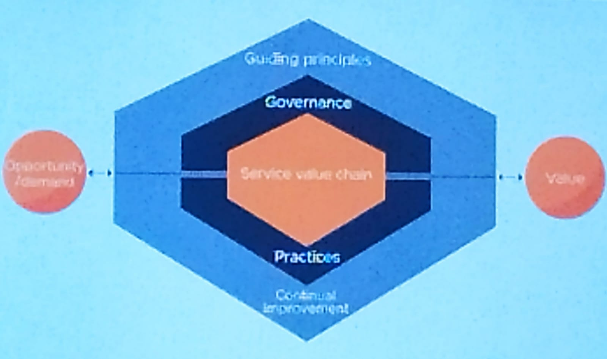

As dimensões da ITIL são consideradas como algo relevante em qualquer situação de prestação de serviço.(Preparação antes de entrar nas práticas)
Possui 5 componentes
O processo sendo aplicado dentro do contexto do sistema de valor ou serviço(Processo gourmetizado)
OBS: A ITIL 4 possui 34 práticas, entre elas ainda as mais famosas desde a versão 1
Função que implementa uma forma de contato entre o usuário e o provedor de TI(email, telefone, whatsapp e etc)
Indicador
Objetivo: Diminuir o impacto de um incidente restaurando o serviço o mais rapido possível
Um incidente é a interrupção de um serviço ou a degradação do nível que foi acordado.
Indicador
Objetivo: Diminuir a probabilidade ou o impacto de um ou mais incidentes
A implementação de boas práticas só irá funcionar se for implementada dentro de um sistema maior.
